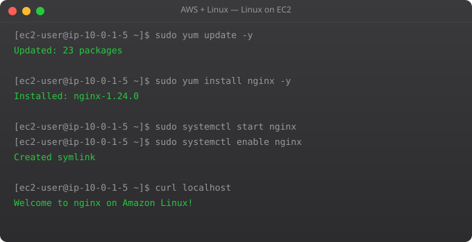

SSH (Secure Shell) is how you access and manage your EC2 instance remotely. It creates an encrypted tunnel from your local machine to the remote server. Understanding SSH -- key management, connection options, troubleshooting -- is fundamental to cloud infrastructure work.
# Fix key permissions (required -- SSH will refuse keys with wrong permissions)
chmod 400 ~/Downloads/my-key.pem
# Basic SSH connection
ssh -i ~/Downloads/my-key.pem ubuntu@YOUR-PUBLIC-IP
# Username depends on AMI:
# Ubuntu: ubuntu
# Amazon Linux 2: ec2-user
# CentOS: centos
# Debian: admin
# RHEL: ec2-user
# Accept fingerprint on first connection (type "yes")
# The authenticity of host can't be established.
# ECDSA key fingerprint is SHA256:...
# Are you sure you want to continue connecting (yes/no/[fingerprint])? yes# Create/edit: nano ~/.ssh/config
Host myserver
HostName 54.123.45.67
User ubuntu
IdentityFile ~/.ssh/my-key.pem
Port 22
Host bastion
HostName 10.0.0.1
User ubuntu
IdentityFile ~/.ssh/bastion-key.pem
Host private-server
HostName 10.0.1.50
User ubuntu
IdentityFile ~/.ssh/my-key.pem
ProxyJump bastion # SSH through bastion first
# Now connect with just:
ssh myserver # Instead of: ssh -i ~/Downloads/my-key.pem ubuntu@54.123.45.67
ssh private-server # Automatically jumps through bastion# Generate a new SSH key pair
ssh-keygen -t ed25519 -C "suraj@mycompany.com"
# Creates: ~/.ssh/id_ed25519 (private) and ~/.ssh/id_ed25519.pub (public)
# Copy your public key to a server (if password auth is still on)
ssh-copy-id ubuntu@server-ip
# Manually add public key to server
cat ~/.ssh/id_ed25519.pub
# Copy the output
# On server:
mkdir -p ~/.ssh
echo "paste-public-key-here" >> ~/.ssh/authorized_keys
chmod 700 ~/.ssh
chmod 600 ~/.ssh/authorized_keys
# List keys loaded in ssh-agent
eval $(ssh-agent)
ssh-add ~/.ssh/id_ed25519
ssh-add -l# Upload file to EC2
scp -i my-key.pem app.zip ubuntu@54.123.45.67:/home/ubuntu/
# Download file from EC2
scp -i my-key.pem ubuntu@54.123.45.67:/var/log/app.log ./
# Upload directory
scp -i my-key.pem -r ./project ubuntu@54.123.45.67:/home/ubuntu/
# With SSH config set up, just use the alias:
scp app.zip myserver:/home/ubuntu/
# rsync (more efficient for syncing directories)
rsync -avz -e "ssh -i my-key.pem" ./project ubuntu@54.123.45.67:/home/ubuntu/# Local forwarding: access remote service on localhost
# Access EC2 database (port 5432) as localhost:5432
ssh -L 5432:localhost:5432 -i my-key.pem ubuntu@54.123.45.67
# Now connect your local database client to localhost:5432
# Traffic goes through encrypted SSH tunnel
# Access private RDS through EC2 bastion
ssh -L 5432:rds-endpoint.amazonaws.com:5432 ubuntu@bastion-ip
# Access web app on private EC2 via bastion
ssh -L 8080:10.0.1.50:80 ubuntu@bastion-ip
# Then open http://localhost:8080 in your browserThe server is not listening on port 22, or a firewall is blocking it. Check: security group inbound rules allow your IP on port 22. Instance is running (not stopped). SSH service is running on the instance. Try: telnet your-server-ip 22 to test port reachability.
Wrong key file, wrong username, or key not in authorized_keys. Check: using correct .pem file (-i flag). Correct username (ubuntu, ec2-user, etc.). Key file permissions: chmod 400 key.pem. On server: cat ~/.ssh/authorized_keys matches your public key.
Add to ~/.ssh/config: ServerAliveInterval 60 and ServerAliveCountMax 3. This sends a keepalive every 60 seconds and tolerates 3 missed packets. For long-running processes on remote servers, use tmux or screen so they survive disconnection.
ed25519 is modern and recommended -- smaller, faster, and more secure. RSA with 4096 bits is acceptable if you need compatibility with older systems. AWS supports both. Generate with: ssh-keygen -t ed25519 -C "comment"
You cannot change the key pair on a running instance through the normal console. Solutions: use EC2 Instance Connect (browser-based). Add your new public key to ~/.ssh/authorized_keys while you still have access. For locked-out instances, detach the root volume, mount on another instance, edit authorized_keys, reattach.
In Part 4, we cover Linux file permissions and user management on EC2 -- essential for securing your cloud server.
← Back to Blog# EC2 Instance Connect provides temporary SSH access
# Uses one-time keys pushed to the instance (60 second window)
# No permanent keys to manage or lose
# Connect via Console:
# EC2 > Instances > Connect > EC2 Instance Connect > Connect
# Connect via CLI:
aws ec2-instance-connect send-ssh-public-key --instance-id i-1234567890abcdef --instance-os-user ubuntu --ssh-public-key file://~/.ssh/temp_key.pub --availability-zone ap-south-1a
# Then SSH within 60 seconds:
ssh -i ~/.ssh/temp_key ubuntu@your-public-ip
# Requirements:
# - Instance must have EC2 Instance Connect agent (pre-installed on Ubuntu 20.04+)
# - Security group must allow SSH from AWS IP ranges (see docs)
# - IAM permission: ec2-instance-connect:SendSSHPublicKey# ~/.ssh/config
Host *
ControlMaster auto
ControlPath ~/.ssh/connections/%r@%h:%p
ControlPersist 10m # Keep connection alive 10 minutes after last use
ServerAliveInterval 60
ServerAliveCountMax 3
mkdir -p ~/.ssh/connections
# First connection establishes the master
ssh myserver # Connects normally
# Subsequent connections reuse the master (instant!)
ssh myserver # Connects in milliseconds
scp file.txt myserver:/tmp/ # Also fast
# List active connections
ls ~/.ssh/connections/